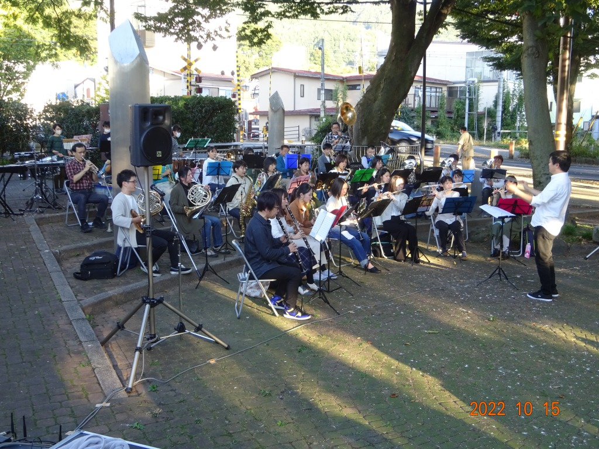

コンサート報告（2022年）
2025年 ｜
2024年 ｜
2023年 ｜
2022年
2021年 ｜
2020年 ｜
2019年 ｜
2018年 ｜
2017年
2016年 ｜
2015年 ｜
2014年 ｜
2013年 ｜
2012年
2011年 ｜
2010年 ｜
2009年 ｜
2008年 ｜
2007年
2006年 ｜
2005年 ｜
2004年 ｜
2003年 ｜
2002年
諏訪湖トライアスロン大会応援演奏 演奏終了（2022.6.25）
諏訪圏域初のトライアスロン大会「SUWAKO 8PEAKSミドルトライアスロン2022」。諏訪湖で2km泳ぎ、それから八ヶ岳山麓まで78kmのバイク（自転車）、諏訪湖に戻ってきて湖周を20kmのランのコースで700名の選手を迎えて開催されましたが、そのゴール前、残り1kmの場所で応援演奏を行いました。
今回の演奏は下諏訪町消防団音楽隊がメイン団体となり、そこに諏訪圏域の市民バンド（岡谷市消防団音楽隊、ウインドオーケストラあんこ～る、富士見ウインドオーケストラ等）の有志が参加。諏訪市民吹奏楽団からも13名のメンバーが演奏に参加しました。選手の皆さんを少しでも力づけることができたなら幸いです。ここまで99kmを走り抜いてきた選手の皆さんですが、演奏に手を振って応えてくれる方も多く、こちらとしても楽しい演奏となりました。
元はといえばコロナのために各団体とも練習やメンバーが不足していたため、「苦肉の策」としてこのような演奏形式となりましたが、図らずも初の「諏訪地区社会人合同バンド」公開演奏が実現し、団員同士の交流を深めることもできました。下諏訪町消防団音楽隊の皆さんをはじめ、関係した多くの皆さんに心より御礼申し上げます。
並木DEコンサート出演 演奏終了（2022.10.15）
 毎年春の１回目に出演させていただいている「並木DEコンサート」。今年は感染症の問題などもあり、秋の最終回に出演させていただきました。秋ということで夕方早めの時間に演奏となりましたが、多くのお客様にご来場いただき、厚く御礼申し上げます。
私たちも楽しく演奏することができました。ありがとうございました。
第28回上社の杜音楽祭 演奏終了（2022.10.23）
今年は御柱祭で賑わった諏訪。その諏訪大社上社本宮前に位置する諏訪市博物館で開催された恒例の音楽祭に、主催団体の一員として出演しました。秋晴れの空の下、多くのお客様にご来場いただき、楽しく演奏することができました。また共演した諏訪市内４中学校吹奏楽部の皆さんのレベル向上も目覚ましく、それぞれの心のこもった演奏に心を打たれました。
開催にあたってご協力いただいた多くの皆さんに深く御礼申し上げます。ありがとうございました。
第28回定期演奏会 演奏終了（2022.12.4）
コロナ第8波と言われている状況下ではありましたが、多くの皆様のご協力により、茅野市民館にて定期演奏会を無事開催することができました。ここ数年では最も多い300人を超えるお客様にご来場いただいたこと、心より厚く御礼申し上げます。
演奏会の内容もだいぶ例年並みに近づき、映像や手拍子などの演出も加えて企画しました。徐々に「いつもの諏訪市吹の演奏会」に近づいてきたのではないかと思います。
私たち諏訪市吹はこれからも楽しい音楽を通じて地域密着型の活動を続けていきたいと思います。今後とも、どうぞよろしくお願いいたします。